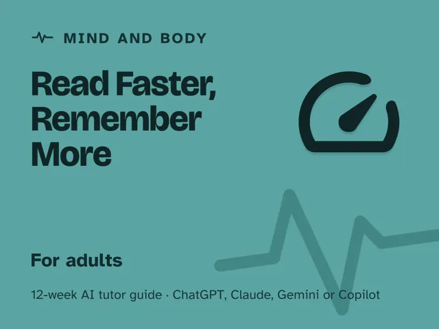

Read Faster, Remember More
$29Instant download: a PDF to read, a browser copy, and the AI-tutor file you hand straight to any AI assistant.Buy it on Etsy →
Take the free placement check first: 15 minutes, and it names the week to start at.
A masterclass you actually finish, because every week ends with a comprehension test, not just a stopwatch. No, you will not read 1,000 words a minute with full comprehension; nobody does, and this pack says so on week one. What you will get is a handful of practical habits to test on your own reading (previewing with a purpose, cutting the habit regressions that quietly slow you down, grouping words into phrases, and choosing the right mode for the material), taught one at a time by an AI tutor that checks whether you actually understood what you read, not just how fast you finished it. Research support for some speed-reading techniques is thin, so nothing here asks you to take a gain on faith: you measure it yourself.
Format: a deep digital guide, 12 ready-to-run ~60-minute weekly sessions. You lead one session a week, fully scripted: every step timed and written out for you. No speed-reading background or prior AI experience needed.
What you get
- 12 weekly sessions, each a deep guide with: a plain-language concept, a concrete worked example, a minute-by-minute session plan with the AI-tutor prompts built in, a "show me" checkpoint, common mistakes to watch for, and practice on material you actually chose.
- A "Never used an AI chat assistant? Start here" onboarding that takes a complete beginner from zero to ready in about five minutes, using free AI assistants (no paid plan needed).
- Four rescue prompts in the front matter for when a session goes sideways, plus an orientation that retires the speed-reading myths on day one and sets an honest baseline (your real WPM and comprehension score) that every week measures against.
- A measured before-and-after: your week-12 speed and comprehension scored against your week-1 baseline.
The 12 weeks
- How Reading Actually Works (and the Speed-Reading Myths)
- Previewing & Setting a Purpose
- Reducing Regressions & Backtracking
- Expanding Your Visual Span
- Subvocalization: What You Can (and Can't) Change
- When to Skim, Scan, or Read Deeply
- Comprehension Checks: Testing What Stuck
- Reading Different Materials Differently
- Note-Taking for Retention
- Project Week I: Build Your Reading System
- Project Week II: Read It For Real
- Demo Day: The Measured Before-and-After
Who it's for
Adults who want to read faster while keeping real comprehension: students with a stack of reading, professionals buried in reports, and lifelong readers who've hit a plateau. No speed-reading background assumed, and no gimmick apps required.
Why this instead of a free chatbot
Ask a raw chatbot for speed-reading tips and it will happily repeat the same debunked claims: read a page in one glance, kill your inner voice, hit 1,000+ WPM with full retention. This pack ships the honesty and structure it lacks: a real technique-by-technique progression, and a tutor built to test comprehension cold after every session, so you find out whether a technique actually worked instead of just feeling faster. The difference between an impressive-sounding number and a provable one.
FAQ
- Do I need any experience? None. Week 1 measures your honest starting point; most people have never actually tested their own reading speed or comprehension before.
- Which AI does it use? I've never used an AI chat assistant. It works with any modern AI assistant (ChatGPT, Claude, Copilot, Gemini), and the free version of any of them is enough, no paid plan required. The guide's first section walks complete beginners through setup in about five minutes, so having never used one before is not a problem.
- Will I really read 1,000+ words a minute? No, and be wary of anything that promises it with full comprehension. The course aims for roughly 20-50% by week 12, but results vary a lot by reader and material, and a smaller honest gain still counts. It works on the habits that can cost you speed and tests comprehension every step, so you know whether any gain is real.
- Is this just eye exercises? No. The core work is previewing, purpose-setting, cutting habit regressions, choosing the right reading mode, and testing your recall honestly; the pacer and phrase-chunking drills are tested on your own reading, and they aren't the whole method.
- Does it work outside the US? Yes. The guide is written in US English, and every session prompt tells the AI to use your country or region for spelling, units, money, and examples.
- Refunds? Standard marketplace refund policy applies.
$29Instant download: a PDF to read, a browser copy, and the AI-tutor file you hand straight to any AI assistant.Buy it on Etsy →